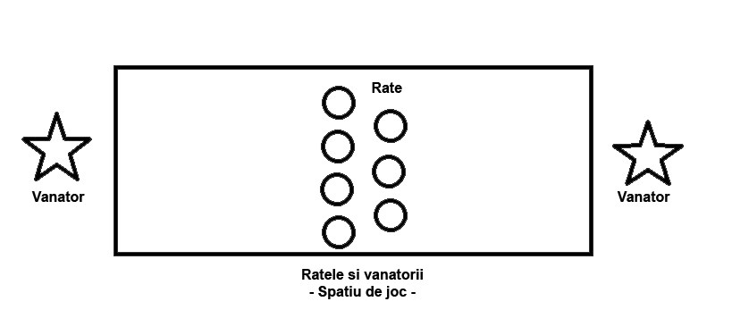

Inapoi
Inapoi
Ratele si vanatorii.
Jocul se joaca dupa urmatoarele reguli:
1. Jucatorii se impart in rate si vanatori. Este nevoie ca 2 jucatori sa joace rolul vanatorilor, iar restul sunt rate.
2. Se delimiteaza spatiul de joaca. De obicei, spatiul are forma dreptunghiulara. In fiecare capat al spatiului de joaca se afla cate un vanator, care nu are voie sa intre in spatiul de joc. Intre vanatori se afla ratele.
3. Vanatorii au rolul de a vana ratele cu mingea. Atunci cand o rata este atinsa de minge, aceasta iese din joc.
4. Ratele trebuie sa se fereasca de minge, fara sa iasa din spatiul de joc.
5. Ultima rata ramasa, trebuie atinsa cu mingea de vanatori din maxim atatea incercari cati ani are (ex: daca rata are 9 ani, vanatorii trebuie sa o scoata din joc din maxim 9 aruncari). Daca nu reusesc, jocul se reia cu aceiasi vanatori.
6. Jocul se sfarseste atunci cand toate ratele au fost atinse cu mingea. Urmatorii vanatori sunt primele 2 rate care au fost scoase din joc.
7. Exista varianta in care ratele pot castiga vieti in plus daca reusesc sa prinda mingea inainte ca aceasta sa atinga pamantul.
Acest site a fost realizat de Constantin Ionut, sper sa va placa!